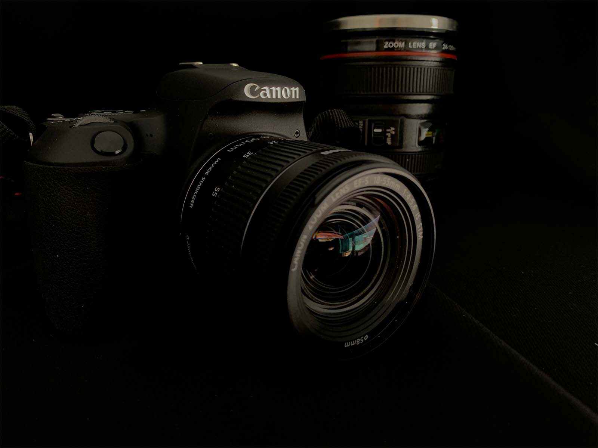

I am a photographer and web designer, with experience in illustration. I was born in Turkey and I live in Ottawa with my family. I am a mum to two sons who soften my heart with their smiles. I am fueled by passion for catching amazing details in nature to capture with my camera. I consider myself a ‘passionate learner,’ always finding new information and skills to discover. My hunger for knowledge and determination to take new steps in different areas set me on the path I am on today. I love web development and design because I am always interested in a challenge and problem-solving.
WHO IS ELIF ATA?
- PHOTOGRAPHER
- WEB DESIGNER
- ILLUSTRATOR

MY STORY